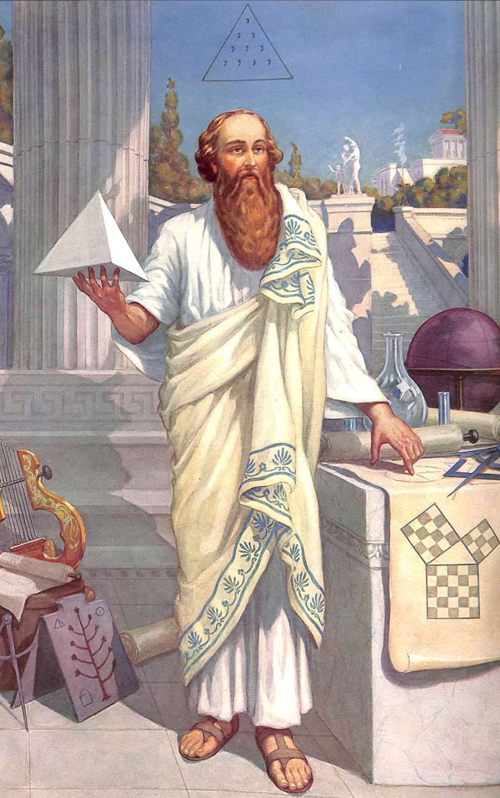

You likely know the name Pythagoras well from high school trigonometry. His equation is the most common and useful equation when it comes to solving a right triangle when given two sides. The equation is as follows: a^2+b^2=c^2. In this equation, 'a' and 'b' represent the shorter sides of the right triangle, and 'c' represents the hypoteneuse. Pythagoras created this equation (along with other less well known ones), but he did a lot of other things with his life as well.
Pythagoras was not only known for his theorums. He was also a prominent philosopher, who believed that reincarnation could be achieved if one inspected their own soul enough. He was followed by a group of other mathematicians and philosophers like himself, all of which practically worshipped him. To put it more succinctly: he was the leader of a math cult. Pythagoras was known to be very exclusionist, only letting a select few people join this group. He was also extremely controlling of his followers. Pythagoras would not let them eat certin colors of birds, he refused to allow them to eat beans due to his own irational fear of legumes. They were also not allowed to question Pythagoras under any circumstances whatsoever. A follower of his once told him that his equation did not actually work if the hypoteneuse was equal to 2, as they did not yet have fractions or decimals and thus could not notate the square root of two. In response to this, Pythagoras drowned this man.
